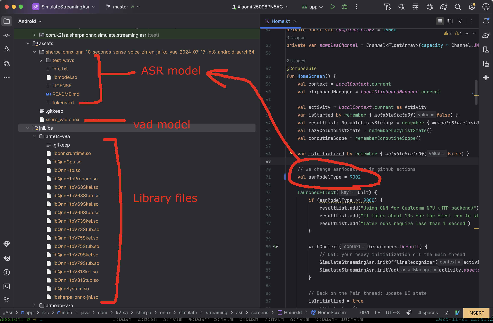

Build Android examples
Pre-built APKs
Links for pre-built APKs with QNN can be found in the following table:
Chinese users |
URL |
|
Simulated streaming
speech recognition
with
Qualcomm NPUusing
QNN |
https://k2-fsa.github.io/sherpa/onnx/android/apk-qnn-simulate-streaming-asr.html |
How to build Android examples
In the following, we describe how to build
with QNN support.
2. Copy QNN libs
cd android/SherpaOnnxSimulateStreamingAsr/app/src/main/jniLibs/arm64-v8a
cp -v $QNN_SDK_ROOT/lib/aarch64-android/libQnnHtp.so ./
cp -v $QNN_SDK_ROOT/lib/aarch64-android/libQnnHtpPrepare.so ./
cp -v $QNN_SDK_ROOT/lib/aarch64-android/libQnnSystem.so ./
cp -v $QNN_SDK_ROOT/lib/aarch64-android/libQnnHtpV68Stub.so ./
cp -v $QNN_SDK_ROOT/lib/aarch64-android/libQnnHtpV69Stub.so ./
cp -v $QNN_SDK_ROOT/lib/aarch64-android/libQnnHtpV73Stub.so ./
cp -v $QNN_SDK_ROOT/lib/aarch64-android/libQnnHtpV75Stub.so ./
cp -v $QNN_SDK_ROOT/lib/aarch64-android/libQnnHtpV79Stub.so ./
cp -v $QNN_SDK_ROOT/lib/aarch64-android/libQnnHtpV81Stub.so ./
cp -v $QNN_SDK_ROOT/lib/hexagon-v68/unsigned/libQnnHtpV68Skel.so ./
cp -v $QNN_SDK_ROOT/lib/hexagon-v69/unsigned/libQnnHtpV69Skel.so ./
cp -v $QNN_SDK_ROOT/lib/hexagon-v73/unsigned/libQnnHtpV73Skel.so ./
cp -v $QNN_SDK_ROOT/lib/hexagon-v75/unsigned/libQnnHtpV75Skel.so ./
cp -v $QNN_SDK_ROOT/lib/hexagon-v79/unsigned/libQnnHtpV79Skel.so ./
cp -v $QNN_SDK_ROOT/lib/hexagon-v81/unsigned/libQnnHtpV81Skel.so ./
Hint
To make things easier, we have copied many unused Stub and Skel libraries. For a given device, you only need one Stub and one Skel library.
For instance, if you are using Xiaomi 17 Pro, you only need to copy libQnnHtpV81Stub.so
and libQnnHtpV81Skel.so to your phone.
In the end, you should have the following files inside the jniLibs/arm64-v8a directory.
(py312) localhost:arm64-v8a fangjun$ pwd
/Users/fangjun/open-source/sherpa-onnx/android/SherpaOnnxSimulateStreamingAsr/app/src/main/jniLibs/arm64-v8a
(py312) localhost:arm64-v8a fangjun$ ls -lh
total 329768
-rw-r--r--@ 1 fangjun staff 15M 20 Nov 17:05 libonnxruntime.so
-rw-r--r--@ 1 fangjun staff 6.1M 20 Nov 13:32 libQnnCpu.so
-rw-r--r--@ 1 fangjun staff 2.4M 21 Nov 22:38 libQnnHtp.so
-rw-r--r--@ 1 fangjun staff 71M 21 Nov 22:38 libQnnHtpPrepare.so
-rw-r--r--@ 1 fangjun staff 8.3M 21 Nov 22:38 libQnnHtpV68Skel.so
-rw-r--r--@ 1 fangjun staff 556K 21 Nov 22:38 libQnnHtpV68Stub.so
-rw-r--r--@ 1 fangjun staff 9.4M 21 Nov 22:38 libQnnHtpV69Skel.so
-rw-r--r--@ 1 fangjun staff 556K 21 Nov 22:38 libQnnHtpV69Stub.so
-rw-r--r--@ 1 fangjun staff 9.4M 21 Nov 22:38 libQnnHtpV73Skel.so
-rw-r--r--@ 1 fangjun staff 562K 21 Nov 22:38 libQnnHtpV73Stub.so
-rw-r--r--@ 1 fangjun staff 9.4M 21 Nov 22:38 libQnnHtpV75Skel.so
-rw-r--r--@ 1 fangjun staff 562K 21 Nov 22:38 libQnnHtpV75Stub.so
-rw-r--r--@ 1 fangjun staff 9.6M 21 Nov 22:38 libQnnHtpV79Skel.so
-rw-r--r--@ 1 fangjun staff 562K 21 Nov 22:38 libQnnHtpV79Stub.so
-rw-r--r--@ 1 fangjun staff 10M 21 Nov 22:38 libQnnHtpV81Skel.so
-rw-r--r--@ 1 fangjun staff 618K 21 Nov 22:38 libQnnHtpV81Stub.so
-rw-r--r--@ 1 fangjun staff 2.5M 21 Nov 22:38 libQnnSystem.so
-rw-r--r--@ 1 fangjun staff 4.6M 21 Nov 22:38 libsherpa-onnx-jni.so
3. Download model files
cd ./android/SherpaOnnxSimulateStreamingAsr/app/src/main/assets/
wget https://github.com/k2-fsa/sherpa-onnx/releases/download/asr-models/silero_vad.onnx
wget https://github.com/k2-fsa/sherpa-onnx/releases/download/asr-models-qnn/sherpa-onnx-qnn-10-seconds-sense-voice-zh-en-ja-ko-yue-2024-07-17-int8-android-aarch64.tar.bz2
tar xvf sherpa-onnx-qnn-10-seconds-sense-voice-zh-en-ja-ko-yue-2024-07-17-int8-android-aarch64.tar.bz2
rm sherpa-onnx-qnn-10-seconds-sense-voice-zh-en-ja-ko-yue-2024-07-17-int8-android-aarch64.tar.bz2
You should see the following files in the end:
localhost:assets fangjun$ pwd
/Users/fangjun/open-source/sherpa-onnx/android/SherpaOnnxSimulateStreamingAsr/app/src/main/assets
localhost:assets fangjun$ ls -lh
total 3536
drwxr-xr-x@ 8 fangjun staff 256B 21 Nov 22:42 sherpa-onnx-qnn-10-seconds-sense-voice-zh-en-ja-ko-yue-2024-07-17-int8-android-aarch64
-rw-r--r--@ 1 fangjun staff 1.7M 13 Aug 2024 silero_vad.onnx
localhost:assets fangjun$ ls -lh sherpa-onnx-qnn-10-seconds-sense-voice-zh-en-ja-ko-yue-2024-07-17-int8-android-aarch64/
total 466184
-rw-r--r--@ 1 fangjun staff 38B 10 Nov 11:03 info.txt
-rw-r--r--@ 1 fangjun staff 227M 18 Nov 17:21 libmodel.so
-rw-r--r--@ 1 fangjun staff 71B 10 Nov 11:03 LICENSE
-rw-r--r--@ 1 fangjun staff 104B 10 Nov 11:03 README.md
drwxr-xr-x@ 7 fangjun staff 224B 10 Nov 11:03 test_wavs
-rw-r--r--@ 1 fangjun staff 308K 10 Nov 11:03 tokens.txt
4. Change the code to use our selected model
Since we have selected sherpa-onnx-qnn-10-seconds-sense-voice-zh-en-ja-ko-yue-2024-07-17-int8-android-aarch64, which corresponds to
the model type 9002 in the file
9002 -> {
val modelDir = "sherpa-onnx-qnn-10-seconds-sense-voice-zh-en-ja-ko-yue-2024-07-17-int8-android-aarch64"
return OfflineModelConfig(
provider = "qnn",
senseVoice = OfflineSenseVoiceModelConfig(
model = "$modelDir/libmodel.so",
qnnConfig = QnnConfig(
backendLib = "libQnnHtp.so",
systemLib = "libQnnSystem.so",
contextBinary = "$modelDir/model.bin",
),
),
tokens = "$modelDir/tokens.txt",
)
}
Hint
https://github.com/k2-fsa/sherpa-onnx/blob/master/android/SherpaOnnxSimulateStreamingAsr/app/src/main/java/com/k2fsa/sherpa/onnx/OfflineRecognizer.kt is a symlink to https://github.com/k2-fsa/sherpa-onnx/blob/16d62b6a08f617c2bd6d21d411911c6462607f08/sherpa-onnx/kotlin-api/OfflineRecognizer.kt#L790
We need to change the following line
val asrModelType = 15
to
val asrModelType = 9002
5. Build the demo
Use Android Studio to open https://github.com/k2-fsa/sherpa-onnx/tree/master/android/SherpaOnnxSimulateStreamingAsr
As a final check, you should see the following files and changes in your Android Studio:
{kind=link}
Now you can build it and run it on your phone.
Hint
If you are using Windows, please have a look at
to fix issues about symlinks on Windows.